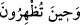
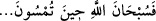

göklerin ve yerin ehlinden temyiz ehline vâcib olduğunun haber verilmesi, en tesirli
şekilde onun emredildiği mânâsınadır. Tıpkı vücudu tedavi edecek ilaçtan önce müshil
içilmesi gibi. Temelin duvarlardan ve onların üzerine yapılan nakışlardan önce olması
gibi.
“__WORD__ kelimesinin “__WORD__ ifâdesinden önce getirilmesi, fâsılalara riâyet etmek ve
üslûbu değiştirmek içindir. Çünkü “__WORD__ kelimelerinden türediği gibi, “__WORD__ kelimesinden ‘gündüzün sonuna girmek’ anlamında bir fiil gelmez.
Âyette “hamd”in tesbih vakitleri arasına konulması, tesbîh ve hamdin hakkının
ikisinin bir araya getirilmek olduğunu hissettirmek içindir. Nitekim “Rabbine
hamdederek O’nu tesbih et” (en-Nasr, 110/3) âyeti ile Rasûlullah (s.a.)’in şu hadisleri
bunu haber verir: “Kim sabahladığında ve akşamladığında yüz kere “__WORD__ Allâh’ı hamd ederek tesbîh ederim.” derse hataları denizin köpükleri kadar da olsa
bağışlanır.”[15]; “Dilde hafif/söylemesi kolay, mîzanda ise ağır iki kelime vardır.
Bunlar: “__WORD__ __WORD__ Allâh’ı hamd ederek tesbîh ederim. Azamet sâhibi
Allâh’ı tesbîh ederim”dir.”[16]
Tesbîh ve hamd etmenin bu vakitlere tahsis edilmesi, bu vakitlerde meydana gelen
Allâh’ın kudretinin âyetlerini, rahmetinin ve nîmetinin hükümlerini, Allah Teâlâ’nın
eksik ve noksanlardan münezzeh ve hamde lâyık olduğunu ifâde eden deliller olduğuna,
bu durumun kesin olarak O’nu tesbîh ve O’na hamd etmeyi zorunlu kıldığına delâlet
etmek içindir.
Bir hadiste Rasûlullah (s.a.) şöyle buyurmuştur: “Kimi kendisine tam ölçekle sevap
verilmesi kimi sevindirirse “__WORD__” desin.”[17] buyurmuştur.
Bazıları âyetteki tesbîh ve hamd etmeyi namaza hamletmiştir. Çünkü namaz ikisini de
kuşatır. “__WORD__ namaz demektir. Kuşluk namazına “__WORD__ __WORD__” denilmesi buradandır.
“Eğer Allâh’ı tesbih edenlerden olmasaydı.” (es-Saffat, 37/143) âyetinde tesbîh
kelimesi namaz/duâ mânâsında kullanılmıştır. Müfessirlerin büyüklerinden biri “tesbih
edenlerden” ifâdesini ‘yâni namaz kılanlardan/duâ edenlerden’ diye açıklamıştır.
İbn Abbâs (r.a.)’dan rivâyete göre bu âyet beş vakit namazı ve vakitlerini kendisinde
toplamıştır. “Akşama ulaştığınızda” akşam ve yatsı namazı, “sabaha kavuştuğunuzda”
sabah namazı, “gündüzün sonunda” ikindi namazı, “öğle vaktine eriştiğinizde” öğle
namazı demektir. Buna göre mânâ ‘Allah için bu vakitlerde namaz kılın’ demektir.
İmamlar bir gün ve gecede farz namazların beş vakit ve on yedi rekat olduğunda ittifak
etmişlerdir. Öğlenin farzı dört, ikindinin dört, akşamın üç, yatsının dört ve sabahın iki
rekattır.
Denilmiştir ki mi‘racda beş vakit namaz dörder rekat olarak farz kılındı. Ancak akşam
namazı üç, sabah namazı iki ve cuma namazı iki rekat olarak farz kılındı. Sonra dörder
rekatlı farzlar seferde ikişer rekat olarak kısaltıldı.
Özürlü kimse dışındakilere namaz vaktin başlangıcında vâcib olur. Özürlü kimseye